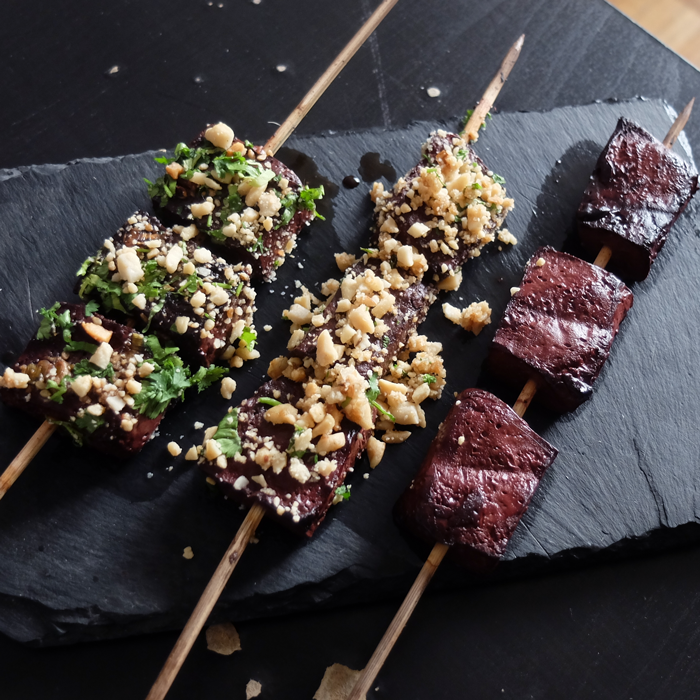

Binagoongang Baboy

Dish Recipes:
- 2 lbs pork belly
- 1 ½ Teaspoons salt
- ¼ Cup bagoong alamang
- 1 Piece of chopped onion
- 1 Piece tomato chopped
- 1 Thumb ginger chopped
- 4 Cloves garlic chopped
- 1 Piece long green pepper sliced
- 1 ½ Tablespoons white vinegar
- 1 Teaspoon white sugar
- ½ Cup water
- 3 Tablespoons cooking oil
- Ground black pepper to taste
Instructions:
- Steam the pork belly for 35 minutes.
- Remove from the steamer and let it cool down. Rub salt all over the pork belly. Let it dry up a bit by leaving it in open air for at least 15 minutes.
- Arrange the pork belly in an air fryer or turbo broiler. Air-fry at 350F for 25 minutes.
- Place the crispy fried pork on a serving plate.
- Prepare the binagoongan sauce by sauteing garlic, onion, ginger, and tomato.
- Once the tomato and onion soften, add the bagoong alamang (shrimp paste). Saute for 1 minute.
- Add long green pepper and vinegar. Stir.
- Pour water water. Let boil. Season with sugar and ground black pepper. Cook for 2 minutes.
- Pour binagoongan sauce over the crispy fried pork. Serve with warm rice.